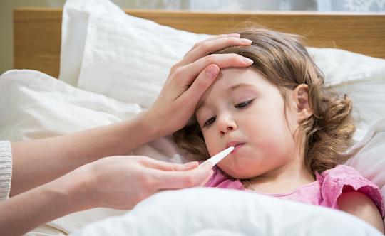
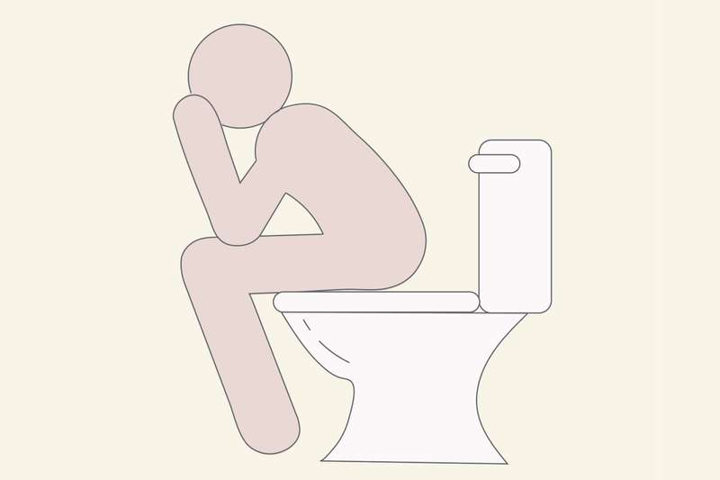

Covid-19
What is Corona Virus?
On December 31st, 2019, the WHO Regional Office in China was informed of cases of pneumonia of unknown cause detected in Wuhan City, Hubei Province of China. On January 7th, 2020, the Chinese authorities announced they had identified a new virus that causes these cases. Coronaviruses (CoV) are a large family of viruses that cause illness ranging from the common cold to more severe diseases such as Middle East Respiratory Syndrome (MERS-CoV) and Severe Acute Respiratory Syndrome (SARS-CoV). The SARS-CoV was transmitted from civet cats to humans in 2002 in China and MERS-CoV from dromedary camels to humans in 2012 in Saudi Arabia. Also, the novel coronavirus (COVID-19) had some link to the seafood and animal market in Wuhan, China. Covid-19 is the new coronavirus and most cases appeared in the Chinese city, Wuhan at the end of December 2019 in the form of acute pneumonia.
Symptoms of Covid-19
Most common symptoms:
Fever
A fever is a temporary increase in your body temperature, often due to an illness. Having a fever is a sign that something out of the ordinary is going on in your body. For an adult, a fever may be uncomfortable, but usually isn't a cause for concern unless it reaches 103 F (39.4 C) or higher. For infants and toddlers, a slightly elevated temperature may indicate a serious infection. Fevers generally go away within a few days. A number of over-the-counter medications lower a fever, but sometimes it's better left untreated. Fever seems to play a key role in helping your body fight off a number of infections.
Dry cough

A cough is a reflex action that clears your airway of irritants and mucus. There are two types of cough: productive and nonproductive. A productive cough produces phlegm or mucus, clearing it from the lungs. A nonproductive cough, also known as a dry cough, doesn’t produce phlegm or mucus. Many things — from allergies to acid reflux — can cause a dry cough. In some cases, there’s no obvious cause. Regardless of the cause, an ongoing dry cough can seriously impact your day-to-day life, especially if it’s worse at night. Dry coughs can be difficult to treat. Once your airways become overly sensitive, they’re easily irritated by coughing, creating a vicious cycle. There are a few things you can do for relief, regardless of what’s causing your cough. Try: Sucking on throat lozenges to moisturize and soothe irritated throat tissue. Taking OTC cough suppressants, such as dextromethorphan (Robitussin), to suppress your cough reflex. Adding honey to a hot drink to soothe irritated throat tissue.
Tiredness
Fatigue is a term used to describe an overall feeling of tiredness or lack of energy. It isn’t the same as simply feeling drowsy or sleepy. When you’re fatigued, you have no motivation and no energy. Being sleepy may be a symptom of fatigue, but it’s not the same thing. Fatigue is a common symptom of many medical conditions that range in severity from mild to serious. It’s also a natural result of some lifestyle choices, such as lack of exercise or poor diet. If your fatigue doesn’t resolve with proper rest and nutrition, or you suspect it’s caused by an underlying physical or mental health condition, see your doctor. They can help diagnose the cause of your fatigue and work with you to treat it. If you’ve made efforts to address the most common lifestyle causes, such as lack of rest, poor eating habits, and stress, without success, and your fatigue has continued for two weeks or more, make an appointment with your doctor.
From the Less common symptoms:
Diarrhoea
Diarrhea — loose, watery and possibly more-frequent bowel movements — is a common problem. Luckily, diarrhea is usually short-lived, lasting no more than a few days. But, when diarrhea lasts for weeks, it usually indicates that's there's another problem. If you have diarrhea for weeks or longer, you may have a condition such as irritable bowel disorder, or a more serious disorder, such as a persistent infection or inflammatory bowel disease. Diarrhea can cause dehydration, which can be life-threatening if untreated. Dehydration is particularly dangerous in children, older adults and those with weakened immune systems.
Symptoms
- Loose, watery stools
- Abdominal cramps
- Abdominal pain
- Fever
- Blood in the stool
- Mucus in the stool
- Bloating
- Nausea
- Urgent need to have a bowel movement
Protect yourself and others from COVID-19
If COVID-19 is spreading in your community, stay safe by taking some simple precautions, such as physical distancing, wearing a mask, keeping rooms well ventilated, avoiding crowds, cleaning your hands, and coughing into a bent elbow or tissue. Check local advice where you live and work. Do it all!
What to do to keep yourself and others safe from COVID-19
Maintain at least a 1-metre distance between yourself and others to reduce your risk of infection when they cough, sneeze or speak. Maintain an even greater distance between yourself and others when indoors. The further away, the better. Make wearing a mask a normal part of being around other people. The appropriate use, storage and cleaning or disposal are essential to make masks as effective as possible.
Here are the basics of how to wear a mask:
- Clean your hands before you put your mask on, as well as before and after you take it off, and after you touch it at any time.
- Make sure it covers both your nose, mouth and chin.
- When you take off a mask, store it in a clean plastic bag, and every day either wash it if it’s a fabric mask, or dispose of a medical mask in a trash bin.
- Don’t use masks with valves.